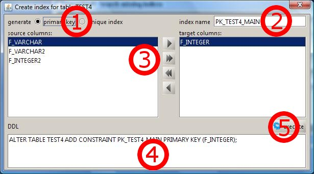

Smarttools Plugin
- Create unique index -
With this module you can create a primary key or a unique index for the table which will displayed in the window header.
To create one of both, follow these steps:

1. Select the type you want to create (primary key or unique index).
2. Enter the name of the primary key or index.
3. Select from the list on the left column you want to use for your primary key or index.
Double click on the column names or use the buttons between the left column (not assigned columns)
and the right column (assigned columns) to add or remove columns.
4. You may also edit the generated ddl statement before finishing your work by doing step 5.
5. Lastly, click the execute button to execute the displayed ddl statement.
The success or error of executing the statement will be displayed.
Notice: The ddl statement will be updated after changing each of the options.